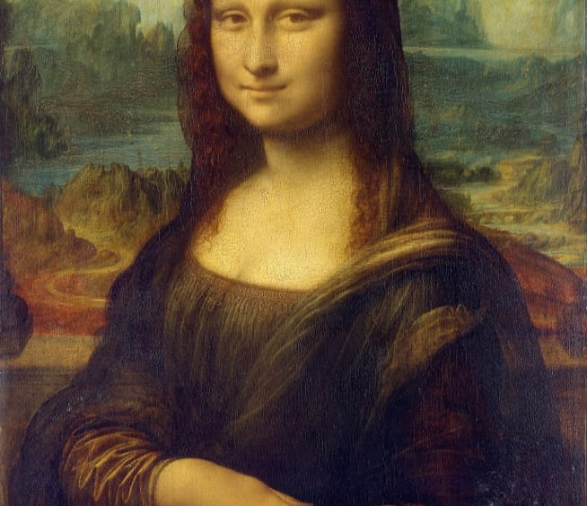
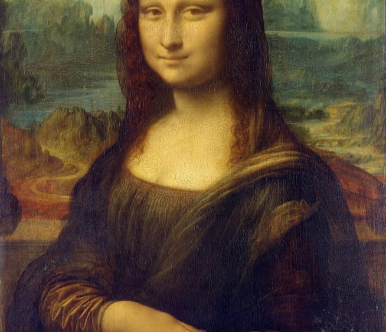

1503
The Mona Lisa (/ˌmoʊnə ˈliːsə/; italian: La Gioconda [la dʒoˈkonda] or Monna
Lisa [ˈmɔnna ˈliːza]) is a half-length portrait painting by Italian artist
Leonardo da Vinci. Considered an archetypal masterpiece of the Italian
Renaissance, it has been described as "the best known, the most visited, the
most written about, the most sung about, the most parodied work of art in the
world". The painting's novel qualities include the subject's enigmatic
expression, the monumentality of the composition, the subtle modelling of
forms, and the atmospheric illusionism.
Go to source
 
